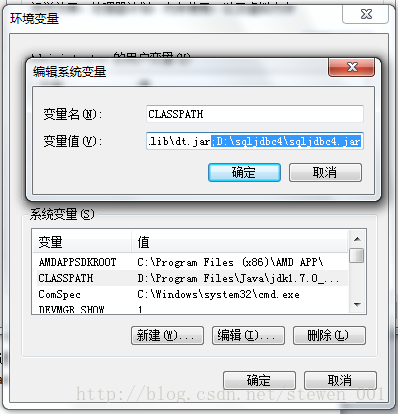
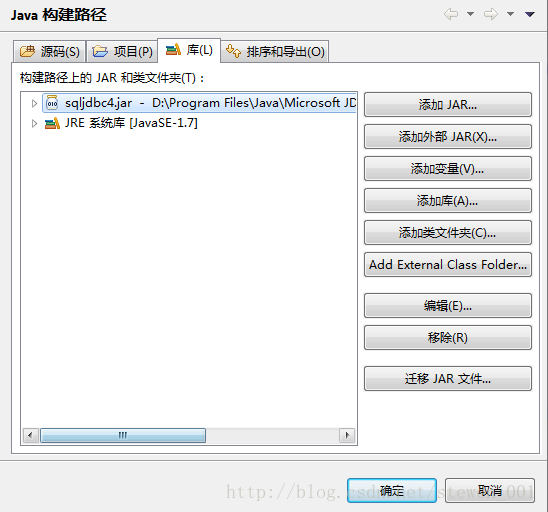
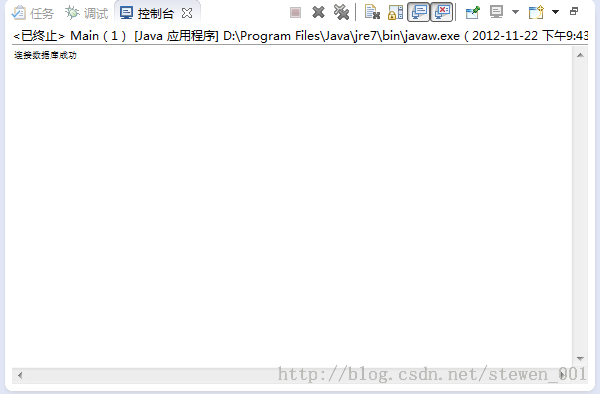

下面请一字一句地看，一遍就设置成功，比你设置几十遍失败，费时会少得多。
首先，在连接数据库之前必须保证SQL Server 2012是采用SQL Server身份验证方式而不是windows身份验证方式。如果在安装时选用了后者，则重新设置如下: http://blog.163.com/jackie_howe/blog/static/19949134720122261121214/
当你保证SQL Server 2012是采用SQL Server身份验证方式后，开始如下配置： 一、因为SQL Server 2012装好后，默认协议是没有开启的，所以要打开SQL Server配置管理器中开启： 1、安装好SQL Server 2012后，运行 开始 → 所有程序 → Microsoft SQL Server 2012 → 配置工具 →SQL Server配置管理器，如下图1所示：
图1 2、打开的窗口如下图所示。在左边栏找到 SQL Server网络配置选项，点开它的小箭头，会看到“【你的数据库名】的协议” （图中是ERIC2012的协议），选中它，看右边栏。如下图2所示：
图2 （1）如果Named Pipes 未启用，则右键→启用 （2）右键单击 TCP/IP，选择 启用 （3）双击TCP/IP（右键→属性），在弹出的窗口中选择 “IP地址” 选项卡，将IP1和IP10的【IP地址】设为127.0.0.1，并将所有【IPx】的【已启用】设为是。接着，拖动下拉条到最下方，将 IPAll 中的【TCP端口】设成 【1433】，其余不变。如下图3和图4所示：

图3

图4 3、重新启动计算机。 4、接下来使用telnet命令测试1433端口是否打开。首先要保证telnet服务开启。开启win7 telnet的方法在这里： http://blog.163.com/jackie_howe/blog/static/199491347201251723939691/
5、完成上一步后。开始菜单 → 运行cmd → 输入：telnet 127.0.0.1 1433，（注意telnet与127之间有空格，1与1433之间有空格）。如下图：
图5 6、若提示“不能打开到主机的连接，在端口 1433: 连接失败”，则说明1433端口没有打开，需要重新进行以上配置。若连接成功，显示如图6所示：

图6
二、环境变量CLASSPATH配置： 1、下载Microsoft JDBC Driver 4.0 for SQL Server 在这里下载：http://www.microsoft.com/zh-cn/download/details.aspx?id=11774 4.0版本支持的 SQL Server有： Microsoft®SQL Server® 2012 Microsoft®SQL Server® 2008 R2 Microsoft®SQL Server® 2008 Microsoft®SQL Server® 2005 Microsoft®SQL Azure
下载sqljdbc_4.0.2206.100_chs.tar.gz（2.2M），解压文件，得到sqljdbc.jar和sqljdbc4.jar。如果你使用的是jre1.7版本，则忽略sqljdbc.jar（因为它用不了，而且如果和sqljdbc4.jar一起用会出错），只留下sqljdbc4.jar。 以下设置均针对jre1.7版本（1.7以下应该也适用）： 在D盘新建一个文件夹，命名为sqljdbc4，将sqljdbc4.jar复制一个进去。 图7 2、右击 我的电脑 → 属性 → 高级系统设置（高级） → 环境变量，在系统变量中双击CLASSPATH变量（或选中CLASSPATH后 → 编辑），在最后面追加 “;D:\sqljdbc4 \sqljdbc4.jar” （注意最前面有个 ; ）若不存在CLASSPATH，就新建CLASSPATH变量，并且将其值设为“D:\sqljdbc4 \sqljdbc4.jar”。如图8所示：

图8 3、连续点击 确定 以退出环境变量配置。 4、接下来的工作非常重要（因为没做我纠结了几天没成功）！！ 有几个地方需要注意： （1）我们需要将sqljdbc4.jar类库文件拷贝到D:\Program Files\Java\jdk1.7.0\jre\lib\ext目录下。（看你安装在哪个盘，如果是C盘，则最前面的D改为C，下同）
（2）我们需要将sqljdbc4.jar类库文件拷贝到D:\Program Files\Java\jre7\lib\ext目录下
最好是，只要是jre文件夹，都复制一个sqljdbc4.jar到jre7\lib\ext里去！！
（3）如果是使用Tomcat做服务器（我使用的是Tomcat7)，那么我们需要将sqljdbc4.jar类库文件拷贝到C:\apache-tomcat-7.0.11\lib目录下。
（4）如果是使用Tomcat做服务器，那么我们需要将sqljdbc4.jar类库文件拷贝到D:\apache-tomcat-7.0.11\webapps\gaofei\WEB-INF\lib目录下（gaofei目录是我的应用，这个路径相信你会看明白）
注意，只有sqljdbc4.jar ！！如果把sqljdbc.jar和sqljdbc4.jar都拷在一起的话，这样就算你全都做对了，也会持续出现有“此驱动程序不支持JRE1.7，请使用支持JDBC4.0的sqljdbc4.jar的类库”的问题。因为jdk默认地选择了sqljdbc.jar（前面我已经提到，只留下sqljdbc4.jar）。
三、使用Eclipse测试连接SQL Server 2012数据库： 1、打开SQL Server 2012，在其中新建数据库 Test，然后退出SQL Server 2012。 2、运行Eclipse，新建一个Java Project 名为 Test。 3、右单击src，依次选择 Build Path → Configure Build Path，在打开的窗口的右边选择 Libraries标签，然后单击 Add External JARs，找到 sqljdbc4.jar 文件并打开，然后单击 OK 完成构建路径的配置。如图9（我是汉化版的）：

图9 4、在Test中新建包pkg，在pkg中新建一个类Main，在其中输入代码如下： packagepkg; importjava.sql.*;
publicclass Main {
publicstatic void main(String [] args)
{
StringdriverName="com.microsoft.sqlserver.jdbc.SQLServerDriver";
StringdbURL="jdbc:sqlserver://localhost:1433;DatabaseName=你的数据库名";
String userName="填写你的用户名，我的是sa";
String userPwd="填写你的密码";
try
{
Class.forName(driverName);
ConnectiondbConn=DriverManager.getConnection(dbURL,userName,userPwd);
System.out.println("连接数据库成功");
}
catch(Exception e)
{
e.printStackTrace();
System.out.print("连接失败");
}
}
}
温馨提示：如果要对数据库中的某个表进行操作，需要像这样子做：String sql = "SELECT FROM [数据库名].[dbo].[表名] where xxx "; 例如String sql = "SELECT FROM [metro].[dbo].[4] wherexxx" 。注意，中括号是必要的，不能去掉。
5、点击右键，选择run as——>Java Application, 控制台出现下图则连接成功！

图10
Disqus 留言
comments powered by Disqus